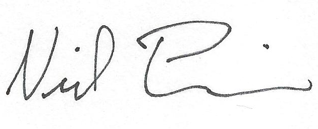

My name is Neil Poulin and I am a 2010 graduate of the Materials Science and Engineering department at the University of Michigan, Ann Arbor. After graduation, I did research in Professor Max Shtein's lab. I worked on depositing small molecule, organic solar cells onto fibers and ribbons. The Shtein lab does this by way of Organic Vapor Jet Printing (OVJP) and Vacuum Thermal Evaporation (VTE). My project was to building a reel-to-reel system to deposit organic photovoltaic cells onto fibers in a continuous process. When I left, the system had demonstrated capabilities of depositing over 10 feet of organic and metallic material and onto both flexible Kapton ribbon and nylon monofilament fiber. I automated this process by writing LabView code to control the hardware. I am also proficient with JAVA, HTML, CSS, JavaScript, Matlab, and all Microsoft Office applications.
Currently, I am working at the LECO Corporation based as a Sales Engineer. LECO manufactures laboratory instrumentation with a focus on combustion-based elemental determinators primarily for carbon, sulfur, nitrogen, hydrogen, and oxygen in both organic and inorganic (metallic) materials. I am responsible for all of our elemental analyzers as well as metallographic sample preparation equipment, hardness testers, microscopes, image analysis equipment, glow discharge spectrometers, and thermogravometric analyzers.
I have experience with the following techniques to characterize thin films and organic photovoltaic devices: ellipsometry to measure thickness; spectrophotometers to measure absorption and photoluminescence spectra; scanning electron and optical microscopy to study surface morphology; four-point probe to measure sheet resistance of conducting layers; and taking EQE measurements to characterize device performance. I also have experience with x-ray diffraction, differential scanning calorimetry, rheometry, hardness testing, as well as other methods of testing and characterizing material properties.
In addition to the many skills I have in the laboratory, I have strong communication and interpersonal skills for relaying both technical and non-technical information. I am the winner of the first annual "Materials Science and Engineering Poster Contest" at the University of Michigan in which teams of four students presented research findings in the format of a technical poster. My project focused on characterizing and comparing carbon fiber versus glass fiber composite devices.
Thank you for visiting my page. If you would like to know more about me, please feel free to contact me by phone or email.
Regards,

Neil Poulin
neil@neilpoulin.com
(970) 286-3268